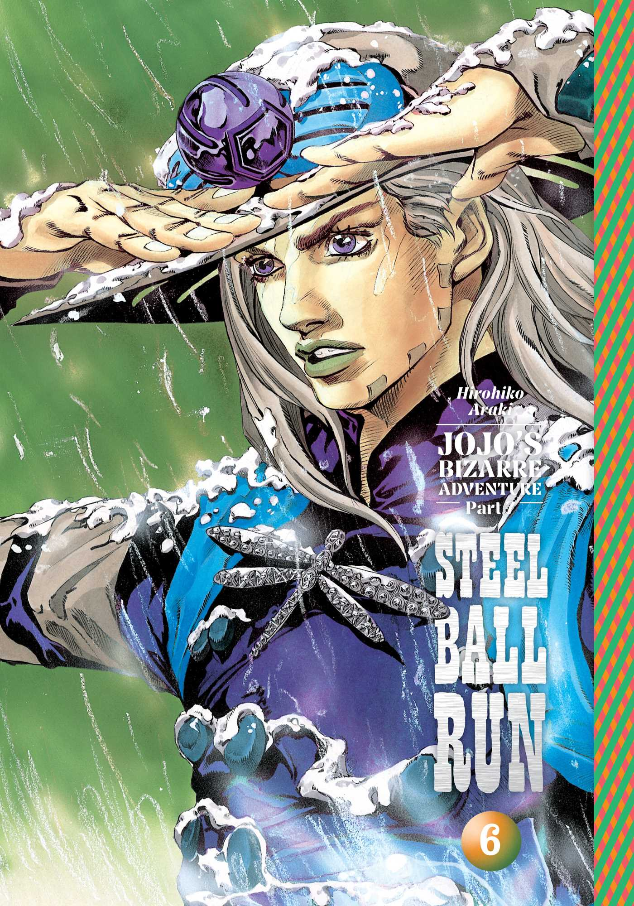

Jojo's Bizarre Adventure
JoJo’s Bizarre Adventure é uma série de mangá e anime criada por Hirohiko Araki que mistura ação, aventura, sobrenatural, drama e muito estilo. A história acompanha diferentes gerações da família Joestar, cujos membros quase sempre têm apelidos derivados de “JoJo”.
O grande diferencial da obra é que cada parte possui protagonistas, épocas e estilos diferentes, mas todas estão conectadas pela linhagem Joestar e por batalhas extremamente criativas.
Principais partes da história
- Parte 1 - Phantom Blood
Ambientada na Inglaterra do século XIX, mostra a rivalidade entre Jonathan Joestar e Dio Brando, um vilão ambicioso muito amado, mesmo sendo o mal em pessoa. - Parte 2 - Battle Tendency
Segue Joseph Joestar, neto de Jonathan, em lutas contra seres antigos chamados "Homens do Pilar". Mistura humor, estratégia e batalhas inteligentes. - Parte 3 - Stardust Crusaders
Uma das partes mais famosas. Introduz os “Stands”, manifestações espirituais com poderes únicos. Jotaro Kujo viaja pelo mundo para derrotar um antigo vilão do início do anime. - Parte 4 - Diamond is Unbreakable
Mais focada em mistério e vida cotidiana em uma cidade japonesa aparentemente tranquila, cheia de usuários de Stand. - Parte 5 - Golden Wind
Ambientada na Itália, acompanha Giorno Giovanna, filho de Dio, tentando mudar a máfia por dentro. - Parte 6 - Stone Ocean
Mostra Jolyne Cujoh, filha de Jotaro, presa em uma penitenciária enquanto enfrenta ameaças ligadas ao legado de Dio.
Coisas mais chamativas da obra
Os "Stands"
Os Stands são poderes sobrenaturais extremamente variados. Alguns controlam tempo, outros manipulam objetos, emoções, gravidade ou até conceitos abstratos. As lutas são mais baseadas em estratégia e criatividade do que força bruta.
Estilo visual único
A arte de Araki é famosa pelas poses exageradas, roupas extravagantes e forte inspiração em moda e escultura clássica. Muitas cenas ficaram conhecidas como os “JoJo poses”.
Referências musicais
Grande parte dos personagens, Stands e ataques possuem nomes inspirados em bandas, músicas e artistas famosos como Queen, David Bowie e Pink Floyd.
Vilões marcantes
Os antagonistas são muito carismáticos, especialmente Dio Brando, considerado um dos vilões mais icônicos dos animes.
Memes e frases famosas
A série virou um fenômeno na internet graças a cenas exageradas e frases como:
- "Oh? You're approaching me?